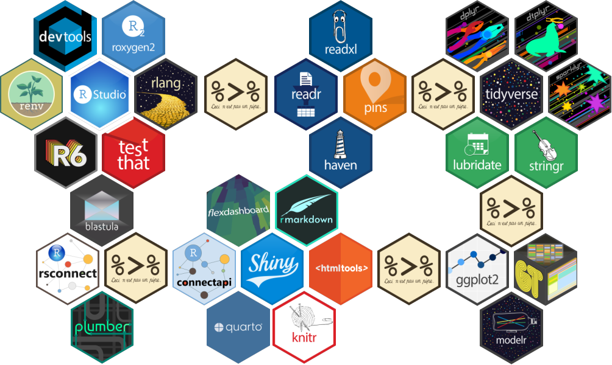

About
Approach
Over the years I have developed a consistent approach to tackling data science problems, which centers around four key components and emphasizes reproducibility:
- Getting data (querying an API or database, scraping a website, importing flat files, etc.)
- Cleaning data (scrubbing, keying, joining, filtering, etc.)
- Analyzing data (exploring, aggregating, modeling, visualizing, etc.)
- Publishing results (knitting a report, updating a dashboard, emailing a summary, etc.)

Experience
MarketBridge - Bethesda, MD
Director, Analytics
April 2021 - present
Hyland Software - Westlake, OH
Team Lead, Marketing Intelligence
March 2019 - April 2021
Data Scientist IV
November 2017 - March 2019
Precision Dialogue (now RRD) - Westlake, OH
Director, Analytics and Data Science
January 2015 - November 2017
Senior Analytics Consultant
June 2011 - December 2014
Analytics Consultant
July 2009 - June 2011
National City Bank (now PNC) - Cleveland, OH
Senior Risk Analyst
July 2008 - July 2009
American Greetings - Cleveland, OH
Statistician I
July 2007 - June 2008
Education
Ohio University - Athens, OH
M.S. Mathematics
March 2007
B.S.Ed. Integrated Mathematics
June 2005
Personal
When not conversing about data science, you may find me opining about sports, video games, science fiction and popular culture. I am also a proud husband, father, animal lover and vegetarian. Here are a few of my favorite things: